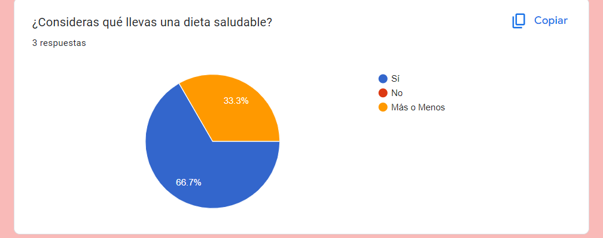
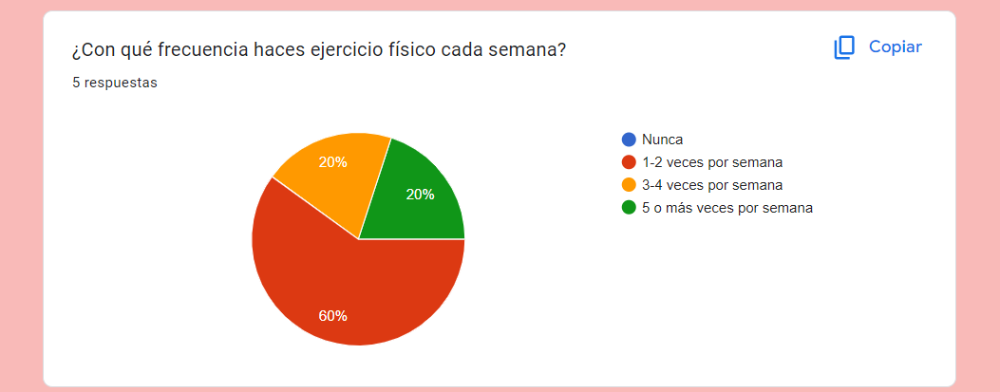
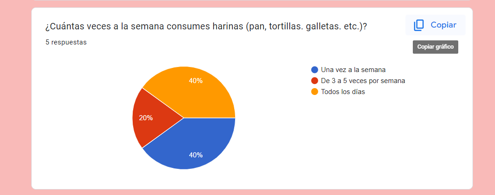

Conciencia Ecológica y Alimentación Saludable
Inicio
Estadísticas
Educación
Consejos
Recetas
Actividades
Testimonios
Formulario de Google
Puedes acceder al formulario de Google haciendo clic en el siguiente enlace:
Ir al formulario de Google
Imágenes
  